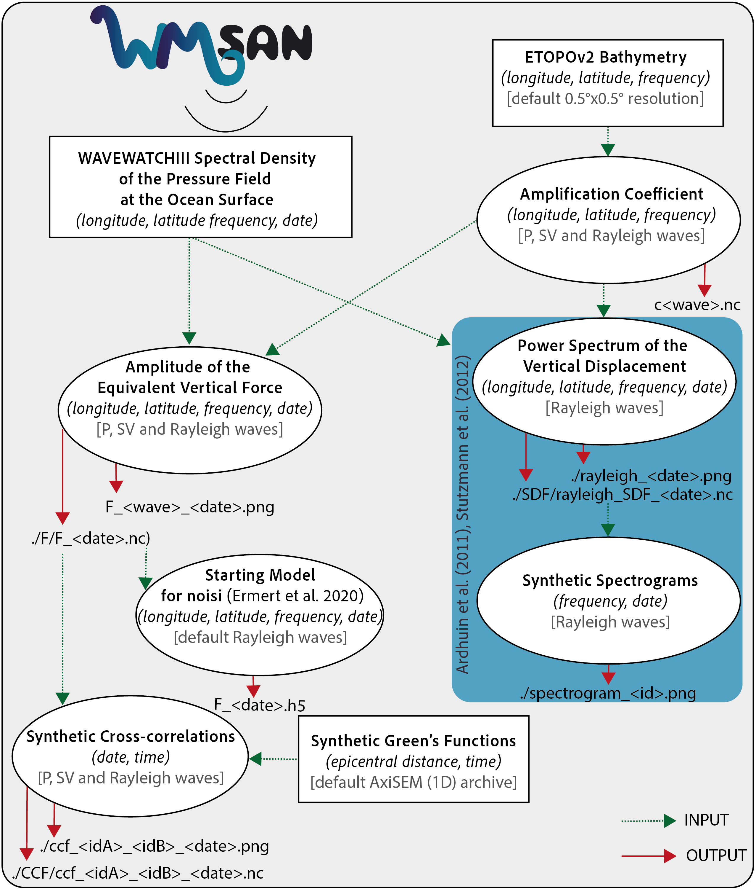

Getting Started
Package Overview
The following scheme describes the different products one can compute using this package and how they interact.

First, let's install the package!
Installation
PyPI
The package is available on PyPI.
-
Create an environment and install
-
if you use Conda environments:
conda create --name wmsan conda activate wmsan conda install pip python3 -m pip install wmsanto deactivate your environment:
conda deactivate -
otherwise
python3 -m venv venv source venv/bin/activate python3 -m pip install wmsanto deactivate your environment:
deactivate
-
From Source
-
Clone the repository
cd path_to_your_wmsan_directory/ git clone https://gricad-gitlab.univ-grenoble- alpes.fr/tomasetl/ww3-source-maps.git cd ww3-source-maps/ -
Create an environment and install
-
if you use Conda environments:
conda create --name wmsan conda activate wmsan conda install pip pip install .to deactivate your environment:
conda deactivate -
otherwise
python3 -m venv venv source venv/bin/activate python3 -m pip install .to deactivate your environment:
deactivate
-
Dependencies
Where Should I Start ?
Congratulations ! You successfully installed WMSAN. Now feel free to browse the Tutorial for examples. The Python functions full descriptions can be found in the API Overview.